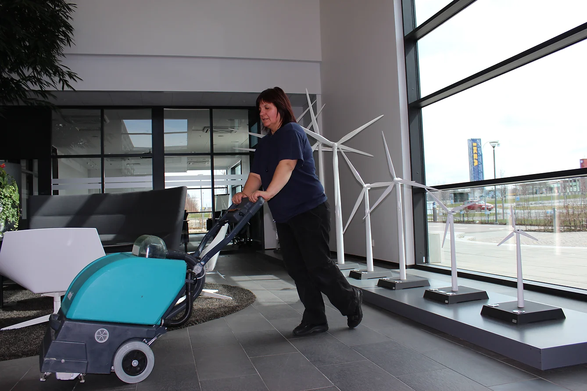
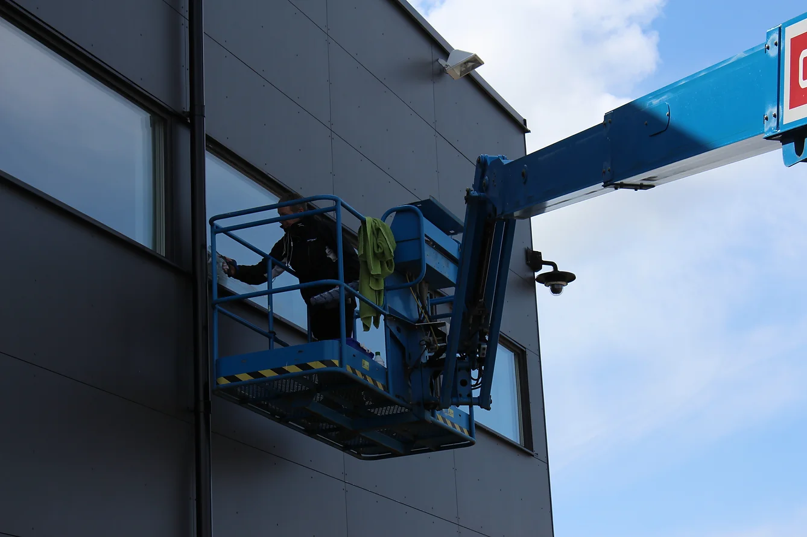
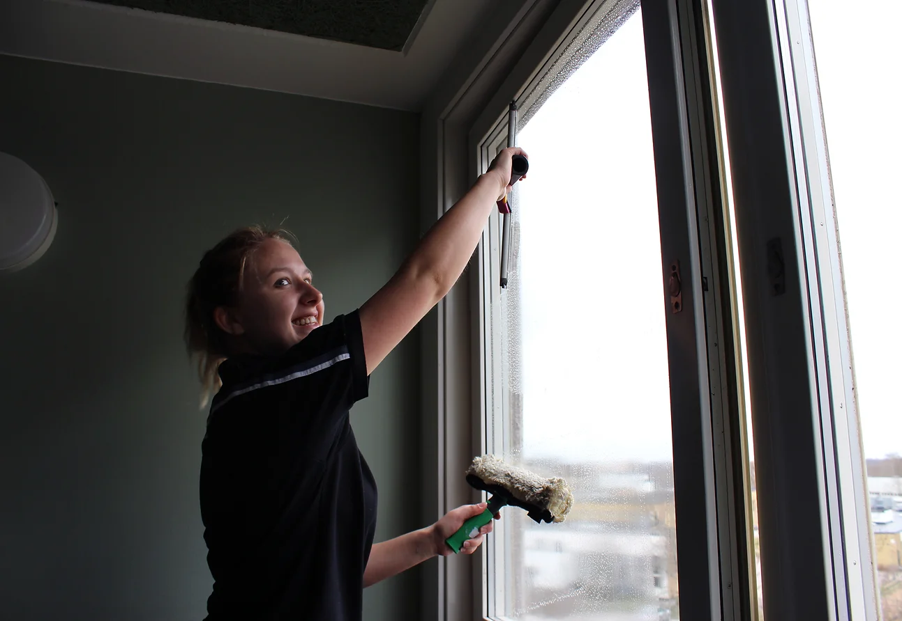
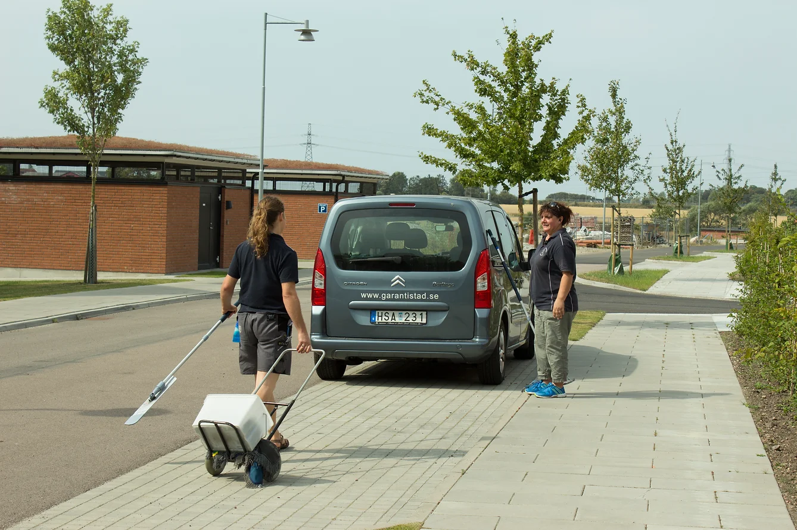
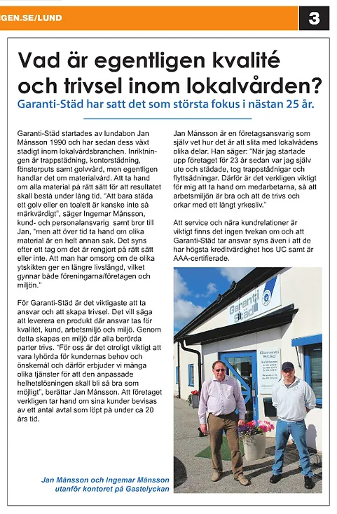

Kontorsstädning
En ren, trivsam och professionell arbetsmiljö – på tider som fungerar för verksamheten.
Garanti-Städ i Lund AB · Sedan 1990
Trygg och miljömedveten städning för företag och bostadsrättsföreningar i Lund, Malmö och hela Skåne.

För företag Kontorsstädning En renare och bättre arbetsmiljö
För fastigheter Trappstädning Välkomnande entréer, varje dag
Golvvård Omsorg som förlänger golvets livslängd
Fönsterputs Kristallklart, inne och uteVåra tjänster
Tydliga upplägg, pålitlig personal och ett resultat som håller. Vi anpassar frekvens och omfattning efter er verksamhet eller fastighet.
En ren, trivsam och professionell arbetsmiljö – på tider som fungerar för verksamheten.
Regelbunden och noggrann skötsel av entréer, trapphus och gemensamma utrymmen.
Professionell behandling som återställer glansen och förlänger golvets livslängd.
Kristallklara fönster, invändigt och utvändigt, med professionell utrustning.
Varför Garanti-Städ?
Vi gör det enkelt att få jämn kvalitet, tydlig kommunikation och trygga rutiner.
Vår personal är bakgrundskontrollerad och verksamheten är fullt försäkrad.
Vi planerar städningen så att den stör verksamheten och de boende så lite som möjligt.
Vi använder miljöcertifierade produkter utan att kompromissa med resultatet.
Du vet alltid vem du ska kontakta och får snabb hjälp när något behöver justeras.
Tydlig omfattning och pris före start – utan överraskningar eller dolda avgifter.
Om vi missar något rättar vi till det enligt vår kvalitetsgaranti.

Om oss
Garanti-Städ startade i Lund 1990. Sedan dess har vi byggt långsiktiga relationer med företag och bostadsrättsföreningar i hela Skåne.
Vi kombinerar personlig service med tydliga arbetssätt. Vårt mål är enkelt: att kunden ska känna sig trygg med både människorna, resultatet och kommunikationen.
“Vi levererar inte bara en städtjänst – vi levererar trygghet, kvalitet och tid tillbaka till dig.”
Aktuellt
Nya samarbeten och korta uppdateringar från vår verksamhet.
Vi ser fram emot att leverera rena och välkomnande gemensamma utrymmen.
Ett nytt samarbete och ännu ett förtroende som vi är stolta över.
Garanti-Städ har fått förtroendet att ta hand om föreningens trappstädning.
Kontakta oss
Vi återkommer med ett tydligt upplägg och en kostnadsfri offert.